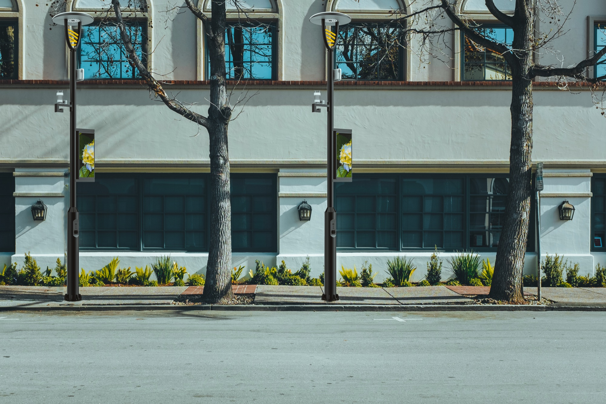
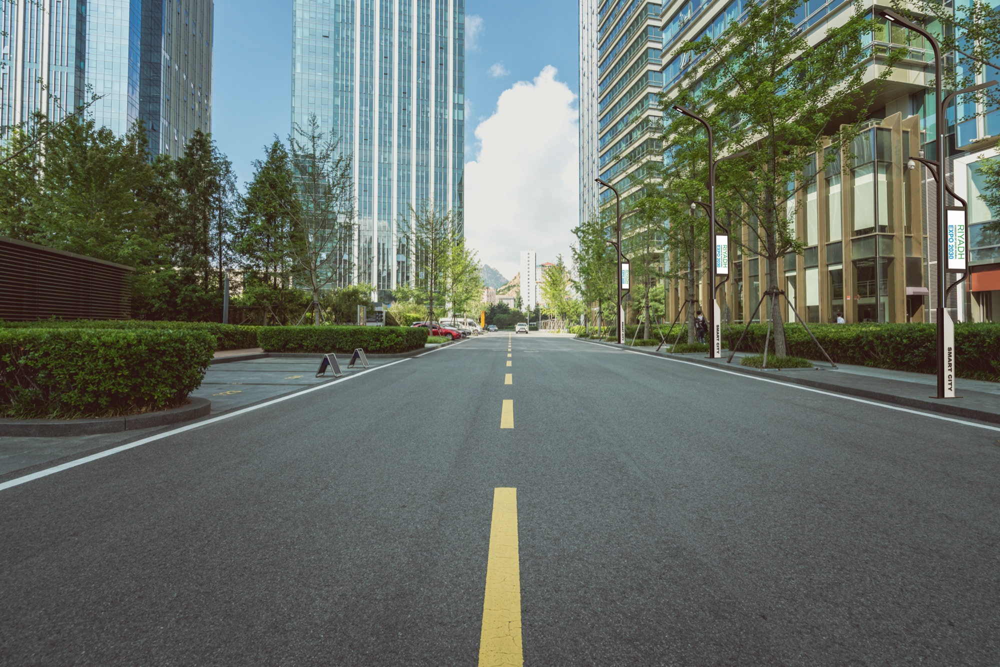

Notes on light.
Field notes for consultants, developers and facility teams: how media façades are specified, how smart poles earn their keep, and how to keep a control system healthy for decades.
90-day plan
Three streams, eight posts each.
- 3/8Media Façade
- 3/8Smart Poles
- 3/8Maintenance
What Is a Media Façade? A Complete Guide for Modern Architecture
Pixels, pitch, content and climate: everything an architect needs to decide whether a building should speak, and how loudly.
Read the guide
11 more posts
- Technical Guide: Pixel Pitch, Transparency & LED Modules for Media FaçadesWhy 10 mm pitch reads from 30 m, what 70% transparency means for the view out, and how to pick a module.

What Are Smart Poles? Complete Guide for Smart City InfrastructureOne pole, eight systems. A plain-language guide for developers and municipalities.- Why Lighting Control Systems Need Regular MaintenanceDrivers age, firmware drifts and scenes get lost. A yearly check-up costs less than one failed event.
- Catalogue 2026, edition 07, is out (sample)212 pages, 164 luminaires and the full Smart Pole range, free to download.
 Designing Media Façades for Harsh Climate Conditions (Saudi Focus)Heat, dust and UV: what changes in the spec when the façade faces a Riyadh summer.
Designing Media Façades for Harsh Climate Conditions (Saudi Focus)Heat, dust and UV: what changes in the spec when the façade faces a Riyadh summer.- Technical Architecture of Smart Poles (CCTV, Wi-Fi, Sensors, EV Charging)Power budgets, backhaul and cabinet layout for a pole that carries eight systems.
 Common Issues in Existing KNX & Lighting Control Systems (And How to Fix Them)Flicker, ghost scenes, unresponsive keypads: the usual suspects and the fixes.
Common Issues in Existing KNX & Lighting Control Systems (And How to Fix Them)Flicker, ghost scenes, unresponsive keypads: the usual suspects and the fixes. The Hitteen showroom reopens with a live controls lab (sample)Book a session to test DALI, KNX and DMX scenes on real luminaires.
The Hitteen showroom reopens with a live controls lab (sample)Book a session to test DALI, KNX and DMX scenes on real luminaires.
Revenue Models: Digital Advertising on Smart PolesHow screens and 5G leases can fund a street’s lighting upgrade.- How to Audit an Existing Lighting Control System: Step-by-Step GuideA checklist from as-built drawings to a costed upgrade plan.
- Vendor registrations renewed for 2026 (sample)An update on approvals with the Kingdom’s giga-projects and utilities.
One email a month. All angles.
New guides from all three streams, product launches and event invitations. No spam; unsubscribe anytime.